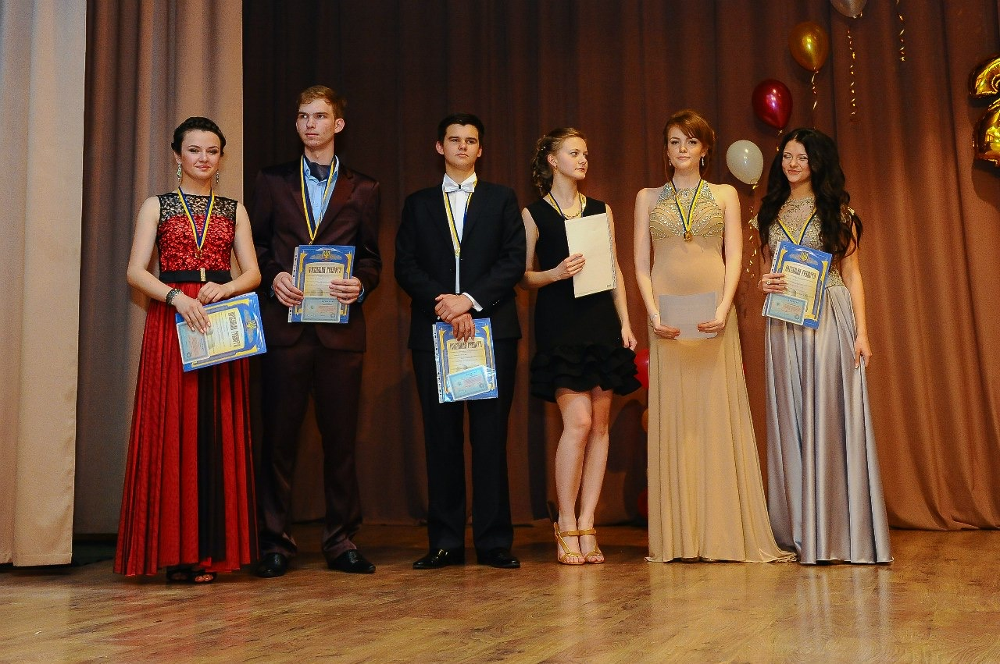

Привет всем! Я родился в 1997 году в городе Краматорск (Донецкой области). По знаку зодиака - водолей, а по восточному гороскопу - бык. Как, наверное, и все дети, учился в школе. Причем, не в одной! Причиной такого перехода являлась смена интересов: меня начала интересовать математика и все что с ней связано. В 2012 году я закончил, соответственно, 9A класс и перешел в другую школу.
В 2014 году я переехал в Россию и поступил в «Уральский федеральный университет» (г. Екатеринбург). В 2018 году закончил университет с красным дипломом. На данный момент проживаю в г. Челябинске и учусь в магистратуре в «Южно-Уральском государственном университете». Занимаюсь музыкой (играю на саксофоне), бывает пишу сценарии, введу детский кружок по логике и шахматам.
На самом деле, не легко что-либо рассказывать и описывать, поскольку понимаешь, что живешь на две страны. Многие мои одноклассники разъехались по миру. Кто-то уже женился из друзей! Но осознаешь, что жизнь, как и сам человек, меняется! Мы все двигаемся дальше! Чего и Вам желаю!
